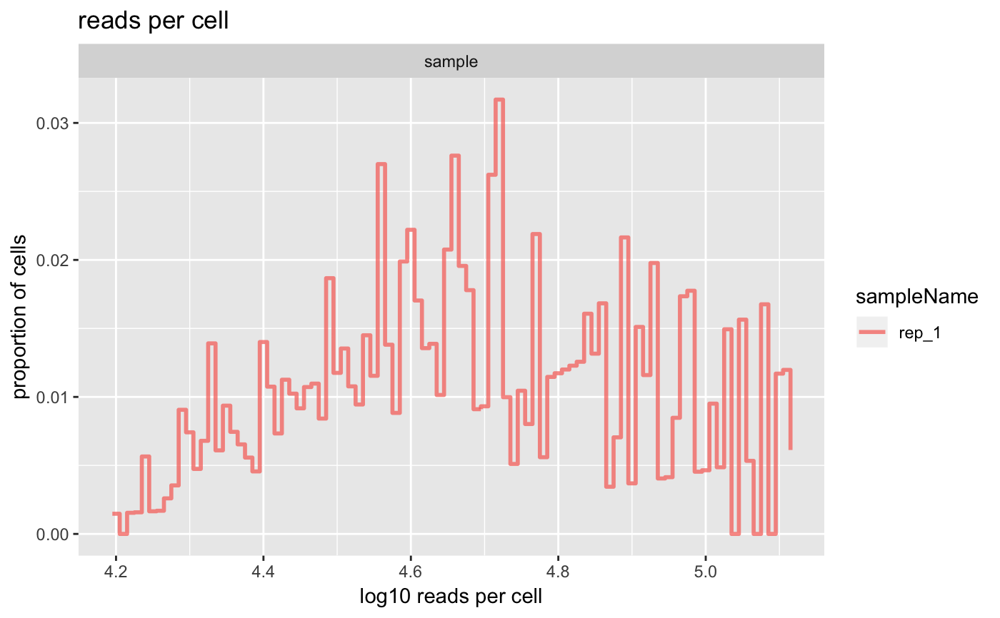
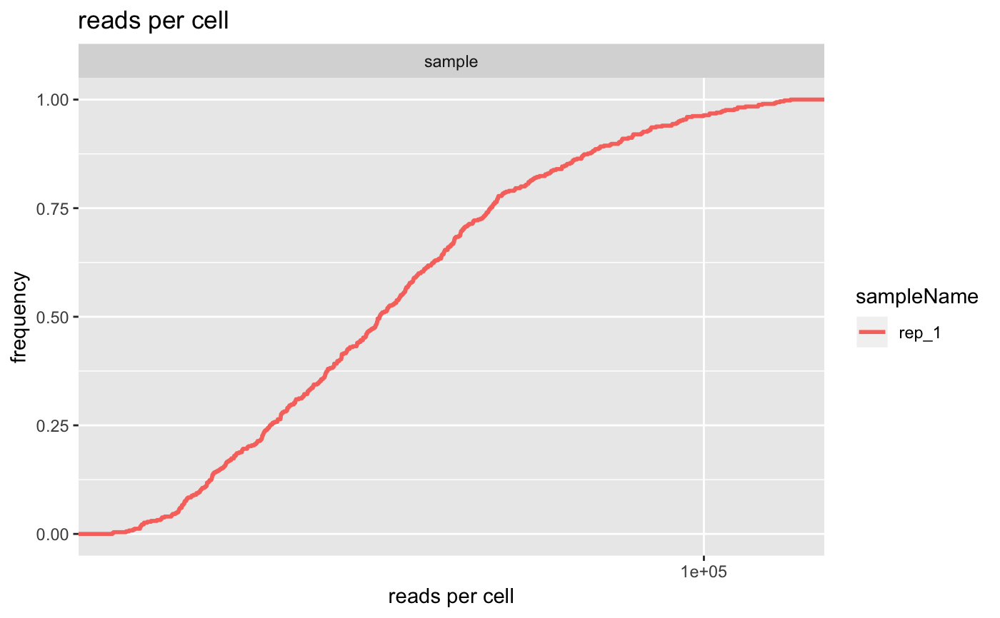

Plot the distribution of read counts for all unfiltered cellular barcodes.
plotReadsPerCell(object, ...) # S4 method for bcbioSingleCell plotReadsPerCell(object, interestingGroups = NULL, geom = c("histogram", "ecdf", "violin", "ridgeline", "boxplot"), cutoffLine = FALSE, color = getOption(x = "acid.color.discrete", default = acidplots::scale_colour_synesthesia_d()), fill = getOption(x = "acid.fill.discrete", default = acidplots::scale_fill_synesthesia_d()), title = "reads per cell")
| object | Object. |
|---|---|
| interestingGroups |
|
| geom |
|
| cutoffLine |
|
| color |
To set the discrete color palette globally, use: options(acid.color.discrete = ggplot2::scale_color_viridis_d()) |
| fill |
To set the discrete fill palette globally, use: options(acid.fill.discrete = ggplot2::scale_fill_viridis_d()) |
| title |
|
| ... | Additional arguments. |
ggplot.
plotReadsPerCell(indrops, geom = "ecdf")